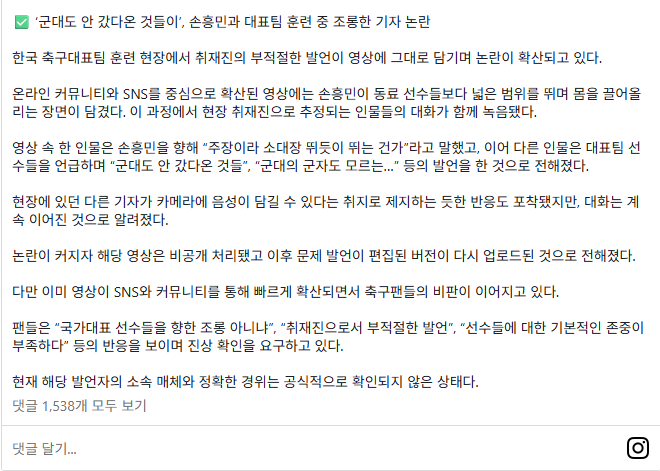

이때는 마치 짠거마냥 아무말도 없이 쉬쉬하고 넘어감
근데 지금 손흥민 까는 기사는 우수수 나옴

이때는 마치 짠거마냥 아무말도 없이 쉬쉬하고 넘어감
근데 지금 손흥민 까는 기사는 우수수 나옴
손흥민이 나가야되고 지금 협회 개혁파들이 망해야하니까 공통적인 목표가 너무 티난다 ㅋㅋ 걍 김민재 꺼지라해라 예전부터 계속 불협화음내고 여론쳐발리면 몇경기 다시 조용히하고 다시 사고치고
협회랑 감독이 선수들 갈라치기 하는거 뻔히 보이는데 이악물고 선수탓만 ㅋ
상종 못할 벌레 새끼들임
이전 협회에서 뭐라도 받는게 있으니까
협회 리뉴얼 되면 이런거 다 사라져서 저러는것 같은데 ㅋㅋ
'저널리즘'
연합뉴스 기자였나?
96라인인지 뭔지 몇년전부터 기집애마냥 문제가 있는데웅에웅거리면서 논란만 존나만들고 뭔 문제인진 말도 안하고 국대를 누가 그딴식으로 뛰냐.. 어차피 협회도 미래도 병신인거 걍 다 꺼지고 축구 접어야지 세금만 오질라게나가고
협회랑 k리그 세금 다 빼야한다니까ㅋㅋ연간 3천억인데 누리호 한번쏘는데 1200억ㅋㅋ 그돈 그대로 연구진들 투자하면 우리도 근미래 재활용 추진체 가질수도있을듯ㅋㅋ
메이저 매체 기자였으면 이것도 일이 커졌을거임
걍 블로거나 다름없는 듣보 인터넷 매체 기자여서 조용히 넘어간거지
인터뷰 보이콧 건 이후로 언론들이 손흥민 버릇 고쳐야겠다고 건수만 생겨라 하고 벼른다는 얘기는 들었는데...
직업으로 급 나누는거 진짜 싫어하는데 기레기 새끼들은 정이 안감 ㅇㅇ
레기레기기레기~ 흥민따라 울고요~
기레기 새끼들 바퀴벌레마냥 계속 늘어나는데 나라에서 다른거 규제는 존나 좋아하면 이런건 안하네 시발 ㅋㅋ
국가가 기레기 규제하는게 쉽지않음
이거 잘못건드리면 무려 '언론자유지수' 떨어짐
사실상 기레기들이 믿고 설치는 구석
우리 기레기가 남이가?